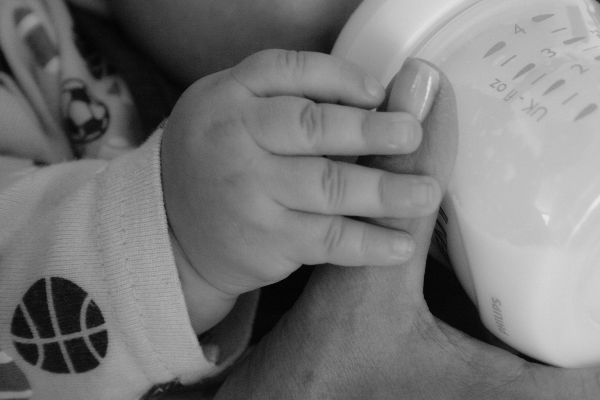
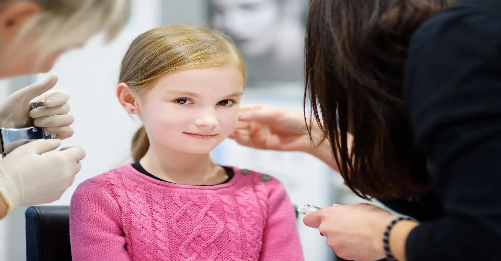
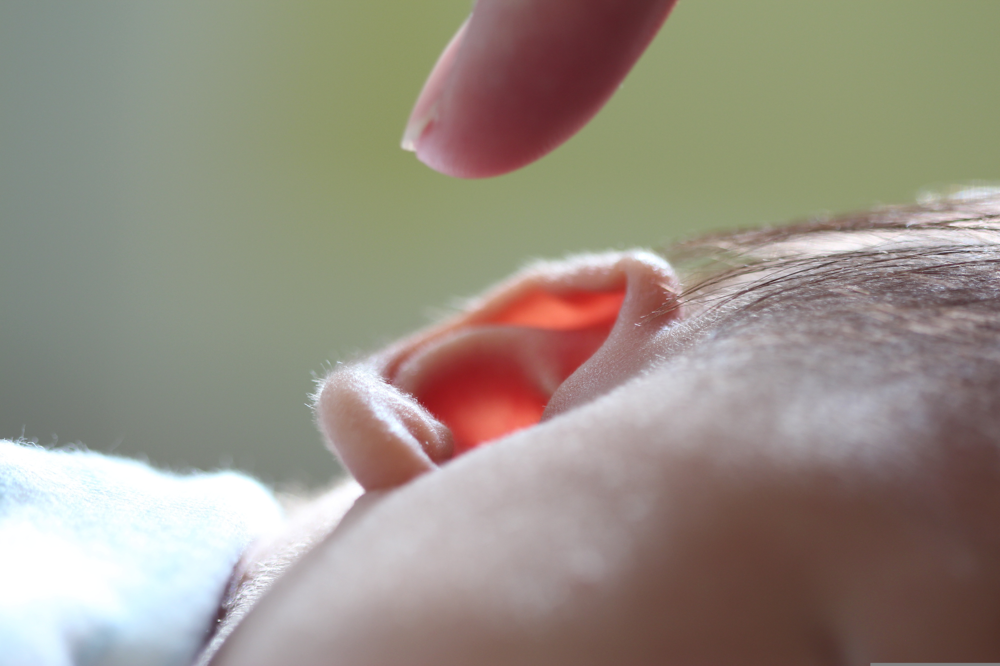

Call: 1 972-546-5660
Text: 1 972-546-5660
340 Hawkins Run #200 Midlothian, TX 76065>
Office Hours : Monday - Friday 8:30am - 5:30pm
Home
Services
Appointment
Staff
Testimonials
Resources
Breast Feeding
Car Seat
New Parents
Symptoms Checker
Nutrition
Why Do We Vaccinate
Financial Policy
Forms
Blogs
Community
Contact Us
Home
Services
Services
Sick
Well Child Exam
Prenatal Counseling
Behavioral Health and ADHD
Autism screening
Asthma awareness with pulmonary function testing on site
Adolescent Care

Lactation support and education
Allergy testing and Immunotherapy

Medical Ear Piercings

Ear well
Dietary counselling and weight management
Sports Physicals
Televisits
TeleVisit